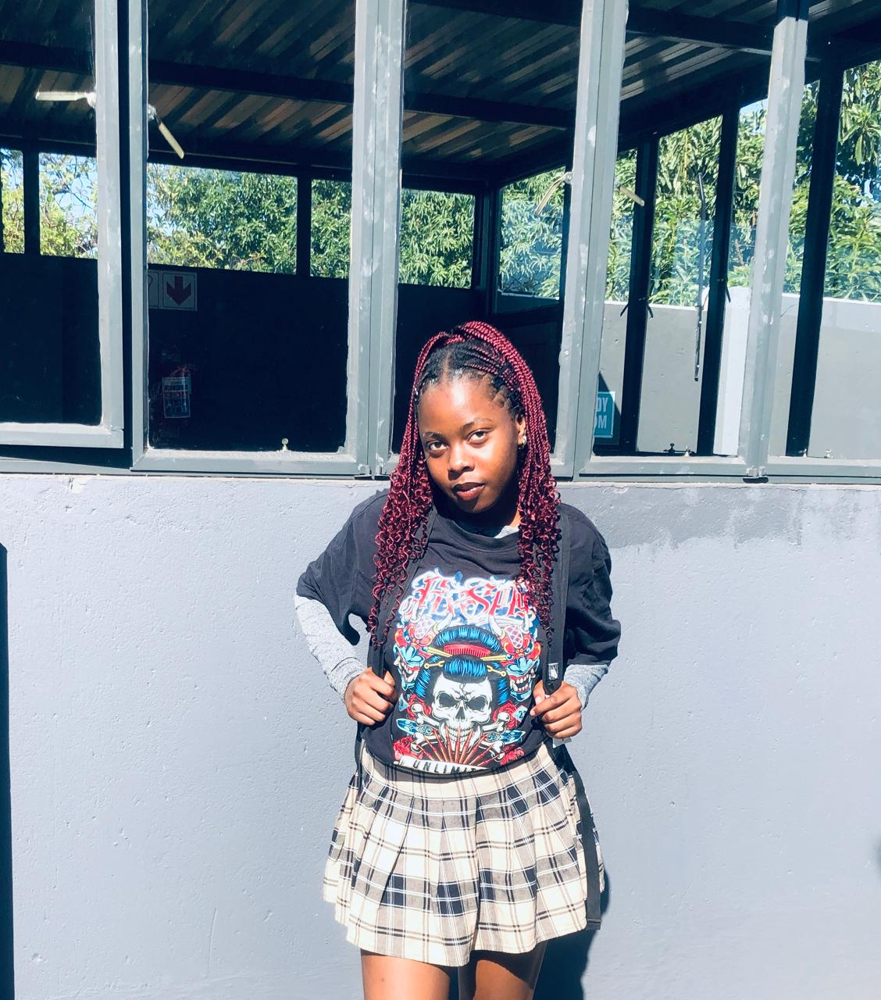

Home Page

Hello, I'm
Zinica Mukhari
a second year student
& an aspiring Cloud Engineer
Welcome to my corner of the web, where
passion meets dedication and I share my
projects and journey with you.
Email:24067649@mvula.univen.ac.za
Call:+27 815647568
Biopic
BIOPIC
Brief story of my life, I graduated from high school in 2022 and I rewrote my matric in 2023 with a goal of being a heath care worker .While I was rewriting I discovered that a had a strong interest interest in technology which lead to me applying a Bachelors of Science in Computer Sciences. In 2024 I started studying Computer Sciences at the University of Venda .I have since then discovered that I enjoy coding in Python, but I have also learned and worked with languages like C++ and Java. I am a quick learner, proficient in Agile methodology, and excel in teamwork. I look forward to collaborating with a team to achieve common goals.
ACADEMIC BACKGROUND
- Matric Certificate, Waverley High School (2018-2022)
- Basic Computer Skills Certificate,Discovery (2023)
- Bachelor of Science in Computer Science,University of Venda (2024-currently) {Average:71/100}
SKILLS & TOOLS
- Technical Skills:Proficient in Java,C++,Python,HTML and CSS.I can use Netbeans IDE and Codeblocks.
- Soft Skills:Strong communication and teamwork skills,with experience in time management skills and problem-solving skills.
ACADEMIC & CAREER GOALS
SHORT-TERM GOALS
- Complete my Bachelors of Science in Computer Science Degree and graduate in record time
- Learn Python
- Create a website
LONG-TERM GOALS
- Futher my studies and get an Honours Degree
- Major is Cloud Security and work towards Cloud Engineering
- Contribute to innovative project and mentor junior developers
- Start Computer related company
"Innovation distinguishes between a leader and a follower" -Steve Jobs
Activities
EXTRA CURRICULUM ACTIVITIES
- Tech Mentorship-I mentor younger students and my peers in coding and computer science
- Hackathons-Participated in hackathons in Rosebank
- Open-source projects-I contributed to an open-source projects with my peers and it hellped me gain experience and build my portfolio
- I play chess
- i volunteer at a home for the elderly
Contact
CONTACT ME
GET IN TOUCH
Email:24067649@mvula.univen.ac.za
call:+27 815647568 /+27 832609514
Copyright © Zinica, All Right
Reserved